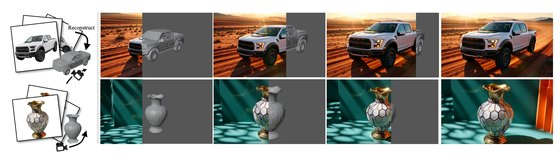

I am the Co-Founder of SynWorld and CTO of Artstrio, building AIGC products
for video and 3D content creation. Before that, I was a Graphics Algorithm Researcher in the
Anti-Entropy department at miHoYo (2022 – 2025), where I shipped production
pipelines for AIGC-driven 3D asset generation and automated scene synthesis, and an AI Research
Intern at the TiMi Technology Center, Tencent IEG (2021).
I received my M.Eng. in Computer Graphics from the
State Key Lab of CAD&CG, Zhejiang University in 2022,
advised by Prof. Youyi Zheng and Prof. Kun Zhou, and my B.Eng. from Zhejiang University in 2019.
My interests span AIGC, 3D Vision and Geometry Processing.
Experience
2015 – 2019
Zhejiang University
B.Eng.
2019 – 2022
ZJU, CAD&CG Lab
M.Eng.
2021
Tencent, IEG
AI Research Intern
2022 – 2025
miHoYo, Lumi
Graphics Algorithm Researcher
2025
SynWorld
Co-Founder
Present
Artstrio
CTO
Selected Projects
SynWorld (Co-Founder, 2025)
FizzReel: Controllable Video Reimagine Platform
A video replication platform focusing on high-precision camera motion replication,
integrating Uni3C technology on the Wan2.2 model. Architected a modular backend workflow
based on ComfyUI, supporting automated pipelines from reference video parsing to structured generation.
[Demo]
miHoYo (2022 – 2025) & Tencent (2021)
Multimodal LLM-driven 3D Scene Layout & Synthesis
Integrated GPT-4V, GroundingDINO, SAM and MoGe for component detection and depth extraction
from concept art, generating structured layouts after Manhattan World coordinate alignment.
Built a Blender synthesizer via MCP / Python API for automated placement — combining VLM-based
asset retrieval, Claude for spatial reasoning, and an AIGC-3D generative fallback —
significantly accelerating Level Artist workflows.
AIGC-3D Mesh & Topology Optimization
A patch-based segmentation pipeline using Watershed and Graph-Cut to smooth boundaries of raw
meshes generated from concept art via the CLAY model, plus a wireframe interaction tool based on
CGAL half-edge structures to produce production-ready quad-dominant meshes.
3D Stylized Stone Generation System
A multi-view stylized image generation pipeline using LoRA-tuned Stable Diffusion controlled by
ControlNet / T2I-Adapter, with an inpainting-based strategy for strict multi-view consistency.
Leveraged GANs for precise normal map estimation, and reconstructed high-poly stylized assets via
density-adaptive large-steps differentiable rendering with continuous remeshing.
LOD Visibility Weight and Culling
Enhanced the QEM-based LOD algorithm with visibility weights and culling logic to intelligently
control polygon reduction priority for large-scale scenes.
PCG Scene Generation
Graph-based layout generation with transformers for automated indoor scene object placement
and orientation.
CAD&CG Lab, Zhejiang University
Teeth Alignment Prediction in Videos
U-Net tooth segmentation followed by frame-by-frame pose fitting of 3D orthodontic models;
a spatio-temporal VAE-GAN with FlowNet motion warping synthesizes high-fidelity, temporally
stable orthodontic preview videos.
Single-view 3D Hair Generation
A Voxel-UNet architecture predicting 3D occupancy and orientation fields from monocular images;
polystrip hair models generated by iteratively growing strands along the predicted orientation field.
Mesh Reconstruction from Noisy Point Clouds
Geometric features extracted via Normal Tensor Voting and converted into graph representations;
a GCN cascade-predicts guided normals for iterative vertex updates.
Published in ACM Transactions on Graphics.
Hand Tracking and 3D Scene Interaction
Real-time hand pose regression from 3D point clouds using PointNet with fingertip refinement;
a Unity interaction system for Leap Motion enabling natural hand-to-virtual-scene interaction.
Selected Publications

GO-Renderer: Generative Object Rendering with 3D-aware Controllable Video Diffusion Models
Zekai Gu, Shuoxuan Feng, Yansong Wang, Hanzhuo Huang, Zhongshuo Du, Chengfeng Zhao, Chengwei Ren, Peng Wang, Yuan Liu